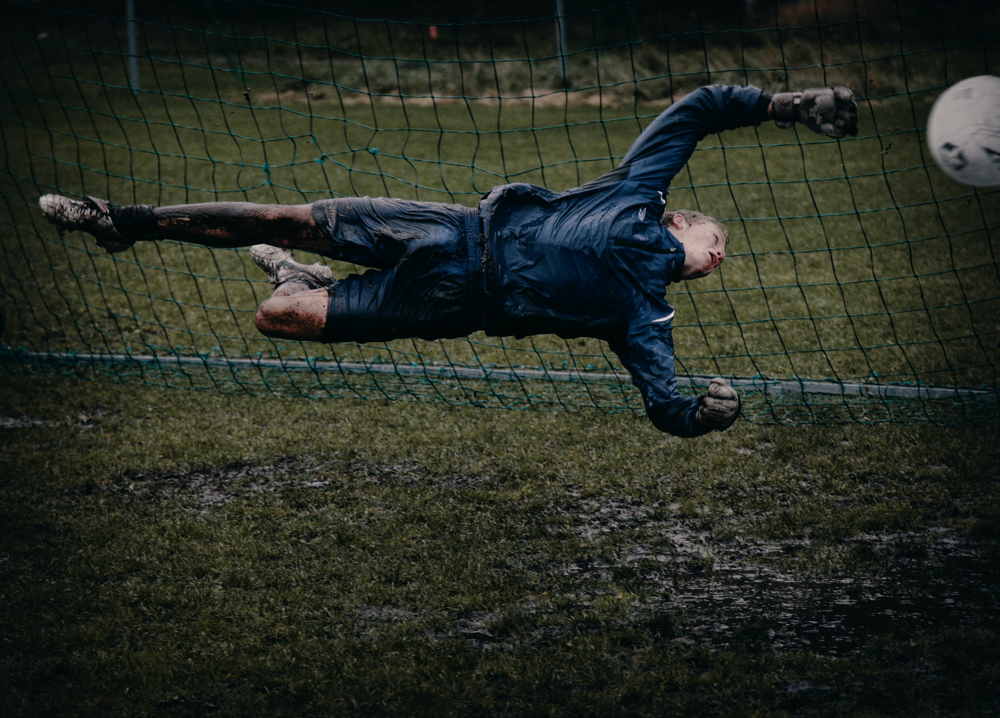

2020.10.28.
Egy kijevi csapat ellen sikerült szép kapufás gólt lőnie.

2020.10.24.
Egy újpesti csapat nagyon figyelt a lábára, ezért fejjel szerzett gólt.

2020.10.20.
Egy barcelonai csapat unatkozó védőit zavarta meg a félpályáról induló felfutásával a kapujukhoz és ha már eljutott odáig, akkor bevágta. Gyönyörű lesgól volt.